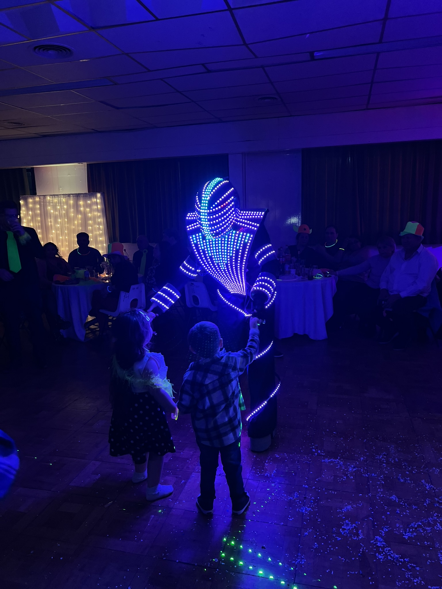
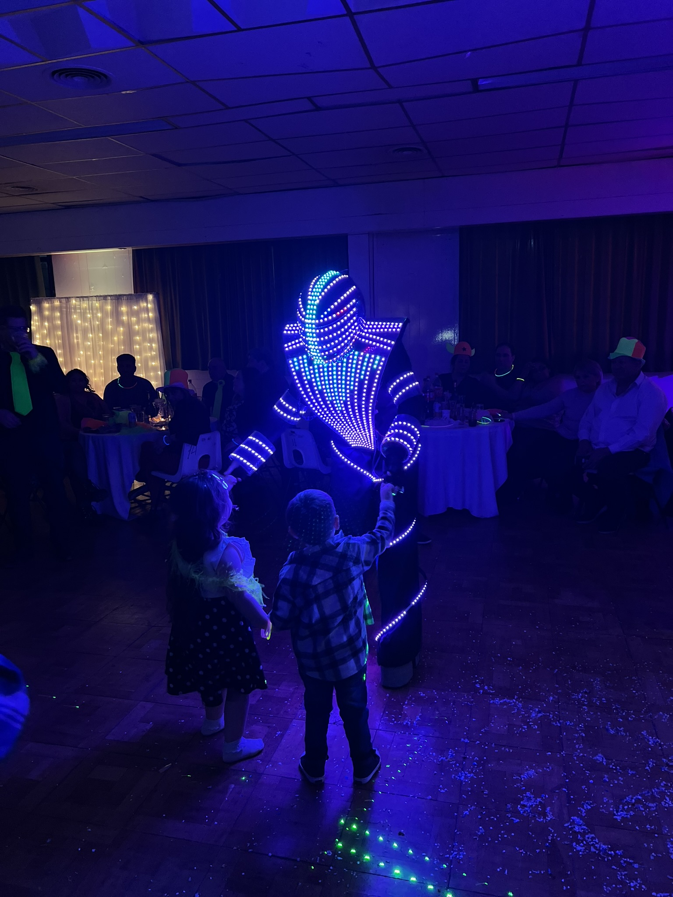

RETRO EVENTOS es una empresa familiar de producciones audiovisuales. Se inició en el año 2007 con el objetivo de brindar servicios de audio en eventos sociales y privados. Con el tiempo fue incorporandose mayor tecnología como luces y robots LED, sistemas automatizados de luces con DMX, amplificadores de sonido, brindandose como adicionales servicios visuales personalizados para cada cliente. A pesar de que su creador no continua funcionando, seguimos creciendo gracias a nuestros empleados, enfocándonos principalmente en la satisfacción de los clientes, siendo nuestro lema principal "Nosotros somos la fiesta, tu fiesta". Hoy en día, estamos en proceso de ser una productora audiovisual, incluyendo servicios como grabacion y edición profesional de audio y video, flyers y contenido para las redes sociales con animaciones 2D, etc.
 


Egresado del Industrial N°6 como Técnico en Electrónica, su objetivo es hacer de una empresa familiar una productora, con conocimientos en música, electricidad, programación y contenidos audiovisuales, teniendo tambien la experiencia de trabajar en RETRO EVENTOS desde hace mas de 10 años.
Egresado del Industrial N°6 como Técnico en Aeronáutica, su objetivo es brindar logística y organización a cada evento que se presenta, con conocimientos en programación, organización de eventos y finanzas, teniendo tambien la experiencia de trabajar en RETRO EVENTOS desde hace mas de 8 años.